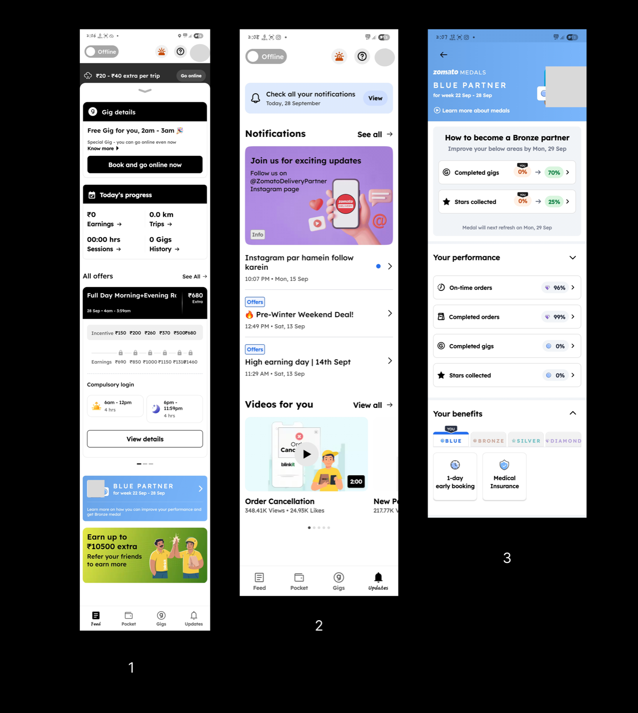

| Role | Associate Product Manager (user research and product critique) |
| Product | Blinkit (Zomato) delivery partner app |
| Method | 15 days of conversations with a delivery partner, app screenshots, public news research |
| Focus | Rewards clarity, notification hierarchy, delivery-time pressure |
1. Overview
A friend told me he was going to work for Blinkit for a while to make extra money. Out of curiosity I asked about the deliveries, the dark stores, how clean they are, how much a partner can earn and how quickly orders must reach customers. I had heard stories of dark stores supplying expired products, but I had ordered through the app myself and never faced that problem. So I decided to investigate whether it was true.
I stayed in touch with this delivery partner for 15 days, which also taught me how the delivery partner app itself works.
2. The Evidence

3. Key Findings
🔵 Finding 1: The medal system lacks a clear value proposition
- Problem: Moving from Blue to Bronze requires 70% gig completion and 25% star collection by Monday, but the benefits are not immediately visible.
- Evidence: The screens show "1-day early booking" and "Medical Insurance" as the advantages, and the partner remains at Blue level despite being in the system.
- Issue: There is no visible monetary incentive (no ₹ impact), and the generic benefits do not motivate immediate action.
🟡 Finding 2: Notifications have no prioritisation
- Problem: Generic notifications sit alongside significant earning opportunities.
- Evidence: An "Instagram par hamein follow karein" notice sits above "Pre-Winter Weekend Deal" and "High earning day", which are buried underneath.
- Issue: There is no visible hierarchy and no emphasis on earning potential.
🔴 Finding 3: The 10-minute delivery promise creates time pressure
This is more an observation than a defect. The app builds a sense of urgency for riders through the 10-minute delivery system. From the public data I found and my conversations, the main concern around this model is simply that time pressure is harmful. Some riders cannot meet the delivery timeline, and that is where the weak medal system and the poor notification design make things worse.
Reference: Blinkit delivery partner's viral video exposes the dark side of fast deliveries (Indian Express)
4. Opportunities
- Show the ₹ value of each medal level so partners can see what they gain by progressing.
- Rank notifications so earning opportunities appear before promotional messages.
- Revisit how delivery-time pressure is communicated to partners.
5. Takeaway
A partner-side app is a product in its own right. Clear rewards and a clear information hierarchy matter as much for delivery partners as they do for customers.